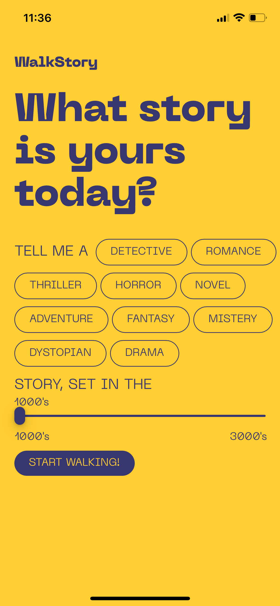

Giulia Marcora
WalkStory - your story, your path
In this Creative Coding project, I developed a web app designed to inspire users to go outside and take a walk. By integrating Cohere, an AI that generates text, the phone's GPS, an AI with a text-to-speech, and user inputs, I created a system that generates a location-specific story for users to listen to while walking. The goal is to engage their imagination during a simple stroll, to make a simple walk to "touch some grass" more interactive and less heavy on the mind.
THE TOOL
Promotional video
App functioning

STEPS TO USE THE APP
Firstly, choose the genre of the story you'd like to listen to. I've included a selection of 10 different genres, offering a varied experience based on your mood. Options range from more relaxed genres like fantasy, adventure, novel, romance, and drama, to those that evoke tension and suspense such as horror, thriller, dystopian, mystery, and detective.
Next, choose the century to set the scene. You can opt for an ancient world from the 1000s, journey through various centuries in between, or immerse yourself in a futuristic landscape from the 3000s.
By tapping the "START WALKING!" button, the text generation process kicks off. The JavaScript code will take your selected genre and century choices, merge them with your GPS location, and input them into a prompt tailored for the AI Cohere to generate your personalized story.
To listen to your story, click the "speak" button, and the AI ElevenLabs will initiate the text-to-speech for your story. Now, you can walk along your path with a unique podcast created just for you. The inclusion of a button to start the text-to-speech is designed to prevent browser blocks, as most of browsers automatically halt functions that produce sounds without user permission.
Continue by tapping the "next chapter" button. The app will capture your new location, the previously written story, and incorporate them into a new prompt to seamlessly continue your narrative. You can then listen to the next chapter by tapping the "speak" button again. This action can be repeated as many times as you wish, as there's no limit to the number of chapters you can generate. This way, users can embark on a walk of any desired length, enjoying an evolving and limitless storytelling experience.
Ultimately, click the "finish story" button, and the app will generate the final chapter using a new prompt that considers both the updated GPS location and the last chapter generated.
To restart the process, just click the close button in the top-left corner to redo the process again.
BACKSTAGE
The approach I employed for this project involved breaking down the code creation process into distinct steps. To progress to the next step, I duplicated the folder containing the code, thereby maintaining a record of all functional codes step by step. I would then add the next step in each successive copy. Here are some crucial steps and thoughts regarding the difficulties I encountered during the programming process:
The initial steps did not necessitate a design; rather, I focused on understanding how to convert GPS coordinates into an address to incorporate into a prompt for Cohere. Following that, I connected the second AI to read the generated text immediately. Working with Cohere presented some challenges, particularly in finding an appropriate prompt. As a less developed AI compared to the more renowned ChatGPT, Cohere's limitations, and nuances required careful consideration. I encountered issues where it initially followed the prompt but later deviated and, at times, generated nonsensical words by arranging letters in an unconventional order. Despite these challenges, I persevered given its free availability for my project.
Working with AI in coding, especially the text-to-speech (TTS) app, posed some challenges. The main problem was the character limits in the free version of the TTS app. To overcome this, I had to create new accounts each time, as the free version had restrictions on usage. This constant need for account creation added complexity to the development process, highlighting the practical constraints of using free versions of AI tools. Despite these difficulties, the project's advancement showed the perseverance needed to tackle such challenges and extract value from AI technologies while being aware of their limitations.
The subsequent step involved designing a home page. I opted for a minimalist approach, incorporating 10 genre buttons initially without color changes. Originally, the plan was to select the number of chapters beforehand. The image illustrates the inputs on the right and their corresponding elements.
The significant challenge I faced, after integrating the loading animation, implementing the panel for story generation with buttons for infinite chapters and color-changing, was ensuring compliance with phone browser rules. Specifically, I had to figure out how to make the text-to-speech (TTS) AI function properly. To address this, I introduced the "speak" button. Additionally, on my phone, I adjusted some settings to ensure that the browser would delete all permissions upon closing the page. This was a crucial step in making the TTS functionality work seamlessly within the constraints of mobile browsers.
OVERVIEW OF THE TOOL